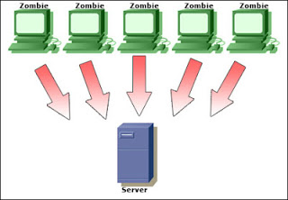

Denial of service ( Ddos attack )
A denial of service attack (DOS) is an attack through which a person can render a system unusable or significantly slow down the system for legitimate users by overloading the resources, so that no one can access it

This is not actually hacking a webite but it is used to take down a website.
If an attacker is unable to gain access to a machine, the attacker most probably will just crash the machine to accomplish a denial of service attack,this one of the most used method for website hacking.
Prevention
- Buy More Bandwidth.
- Restricted Connectivity.
- Opt for DDoS Mitigation Services